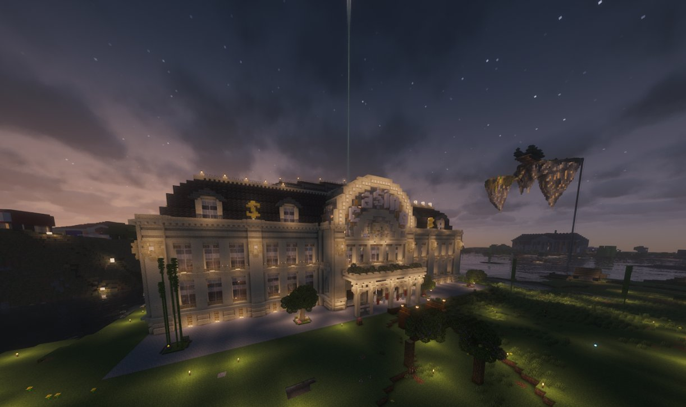
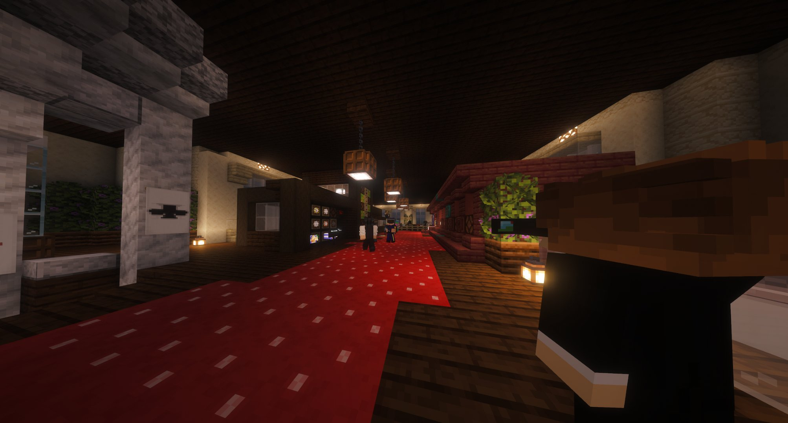

Le casino ouvre ses portes : la fortune sourit aux audacieux
C'est une ouverture que beaucoup attendaient. Le casino du territoire ouvre officiellement, promettant frissons, divertissement et — pour les plus chanceux — une fortune à portée de main.

C'est une ouverture que beaucoup attendaient avec impatience. Le casino de notre territoire ouvre officiellement ses portes, promettant frissons, divertissement et — pour les plus chanceux — une fortune à portée de main. Dans un contexte où l'actualité de l'île a été particulièrement chargée ces derniers jours, cette ouverture tombe comme une bouffée d'air frais pour tous ceux qui cherchent à s'amuser et à tenter leur chance.
Un lieu de divertissement pour tous
Le casino se veut un espace de plaisir et d'évasion, ouvert à l'ensemble des citoyens du territoire. Que vous soyez joueur chevronné ou simple curieux venu tenter votre chance pour la première fois, les portes vous sont grandes ouvertes. Une adresse qui promet de devenir rapidement l'un des lieux incontournables de la vie sociale de notre île.

Tentez votre chance — mais jouez responsable
Le Karmine Déchaîné rappelle à ses lecteurs que si le jeu est une activité de loisir formidable, il convient de toujours jouer avec modération. Les KCoins peuvent partir aussi vite qu'ils arrivent — ne misez jamais plus que ce que vous êtes prêts à perdre. La chance sourit aux audacieux, certes, mais la sagesse sourit aux prudents.
Une ouverture bienvenue
Dans un territoire secoué par les récents événements — kidnappings, évasions, attaques au parlement — l'ouverture du casino représente un signal fort : la vie continue, et elle peut être belle. Un nouvel établissement qui contribue à l'économie locale et offre aux citoyens un espace de détente et de festivité qu'ils méritent amplement.
"La fortune appartient à ceux qui osent. Ce soir, le casino vous tend les bras."
— La Rédaction
Vous souhaitez que le Karmine Déchaîné couvre l'ouverture de votre commerce ? Contactez notre rédaction.